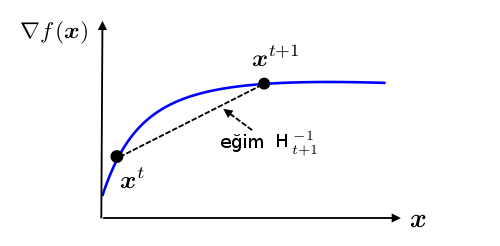

Bir $f$ hedef fonksiyonunun minimizasyonu için Newton'un özyineli algoritmasi
$$ x^{k+1} = x^k - F(x^k)^{-1} g^k $$
ki $g$ gradyan, $F$ ise Hessian.
Ya da
$$ x^{k+1} = x^k - (\nabla^2 f(x^k))^{-1} \nabla f(x^k) $$
Newton'umsu metotların ana fikri Hessian matrisı yerine sadece gradyan bilgisini kullanarak yaklaşık bir $H_k$ kullanmak. Bunu nasıl yapacağız?
$f(\cdot)$'un karesel olarak temsilini yazalım, özyineli gidişat sirasinda, bir herhangi bir $x^{k+1}$ etrafında Taylor açılımı
$$ m_k(x) \equiv f(x^{k+1}) + \nabla f(x^{k+1})^T (x-x^{k+1}) + \frac{1}{2} (x-x^{k+1}) ^T H_{t+1}^T (x-x^{k+1}) $$
Eger gradyani alirsak
$$ \nabla m_k(x) = \nabla f(x^{k+1}) + H_{k+1}^{-1} (x-x^{k+1}) $$
Şimdi $k$ ve $k+1$ noktaları, gradyanları üzerinden bir $H^{k+1}$ ilişkisi ortaya çıkartmak istiyoruz ki çözüp bir sonuç elde edebilelim. Ek denklemler elde etmek için şu akla yatkın şartları öne sürebiliriz, $m$ ve $f$ gradyanları birbirine uysun. Yani,
$$ \nabla m_k(x) = \nabla f(x_k) $$
O zaman, "Newton-umsu metot şartı" da denen iki üstteki denklemle beraber, ve açılımda $x$ herhangi bir $x$ olabileceği için onun yerine $x^k$ kullanarak,
$$ \nabla f(x^{k+1}) + H_{k+1}^{-1} (x^k-x^{k+1}) = \nabla f(x^k) $$
$$ H_{k+1}^{-1} (x^k-x^{k+1}) = \nabla f(x^k) - \nabla f(x^{k+1}) $$
$$ H_{k+1}^{-1} (x^{k+1}-x^k) = \nabla f(x^{k+1}) - \nabla f(x^k) $$
Üsttekine sekant denklemi adı veriliyor, şu figürle alakalı,

Yani sekant denklemine göre $H_{k+1}^{-1}$ değeri, yatay kordinattaki $x^{k+1}-x^k$ değişimini, gradyan değişimi $\nabla f(x^{k+1}) - \nabla f(x^k)$'e eşler [4]/i0p.
Kısaltma amaçlı,
$$ H_{k+1}^{-1} \underbrace{(x^{k+1}-x^k)}_{y_t} = \underbrace{\nabla f(x^{k+1}) - \nabla f(x^k)}_{s_t} $$
$$ H_{k+1}^{-1} y_k = s_k \qquad (1) $$
Özyineli bağlamda bir $H_0$'dan başlayarak ufak değişimlerle sonuca ulaşılmaya uğraşılır. Değişimlerin ufak olması ve bu değişimlerin kerte 1 eki [5] ile olması sonucu yine [4]'teki matris normu üzerinden görülebilir. Biz farklı bir yönden, eğer ufak değişim kerte 1 ve 2 ile yapılsa nereye varılacağına bakacağız [1, sf. 111].
Kerte 1 eki ile $H_k$'yi $H_{k+1}$ yapmak demek
$$ H_{k+1} = H_k + czz^T $$
eşitliği demektir. Bunu iki üstteki formül içine koyarsak
$$ s_k = (H_k + czz^T) y_k = H_k y_k + cz (z^T y_k) $$
$z^T y_k$ bir skalar olduğu için
$$ cz = \frac{s_k - H_k y_k}{z^T y_k} $$
Bu denklemi çözen en basit $c,z$ seçenekleri
$$ z = s_k - H_ky_k $$
$$ c = \frac{1}{z^Ty_k} $$
Bu bize kerte 1 güncelleme formülünü verir,
$$ H_{k+1} = H_k + \frac{ (s-H_ky_k) (s-H_ky_k)^T }{(s-H_ky_k) y_k} $$
Ne yazık ki kerte 1 güncelemesinin bazı problemleri var. Bunlardan en önemlisi güncelleme sonrası elde edilen yeni $H_{k+1}$'in pozitif kesin olmasının garanti olmaması, bu sebeple bir sonraki döngüde elde edilecek yön $d_k = -H_k \nabla f(x_k)$'nin bir iniş yönü olmasının garantisinin de tehlikeye girmesi.
Çözüm olarak $H_{k+1}$'in pozitif kesin kalmasını garantileyecek kerte 2 güncellemesi keşfedilmiştir. Yani
$$ H_{k+1} = H_k + c_1z_1z_1^T + c_2z_2z_2^T $$
% d -> s, g -> y
Yine (1)'deki Newton-umsu metot sartiyla beraber
$$ s_k = H_k y_k + c_1z_1(z_1z_1^T) + c_2z_2(z_2z_2^T) $$
[devam edecek]
import pandas as pd
import numpy as np
import matplotlib.pyplot as plt
import numpy.linalg as lin
eps = np.sqrt(np.finfo(float).eps)
def rosen(x):
return 100*(x[1]-x[0]**2)**2+(1-x[0])**2
def rosen_real(x):
gy =[-400*(x[1]-x[0]**2)*x[0]-2*(1-x[0]), 200*(x[1]-x[0]**2)]
return rosen(x), gy
def linesearch_secant(f, d, x):
epsilon=10**(-5)
max = 500
alpha_curr=0
alpha=10**-5
y,grad=f(x)
dphi_zero=np.dot(np.array(grad).T,d)
dphi_curr=dphi_zero
i=0;
while np.abs(dphi_curr)>epsilon*np.abs(dphi_zero):
alpha_old=alpha_curr
alpha_curr=alpha
dphi_old=dphi_curr
y,grad=f(x+alpha_curr*d)
dphi_curr=np.dot(np.array(grad).T,d)
alpha=(dphi_curr*alpha_old-dphi_old*alpha_curr)/(dphi_curr-dphi_old);
i += 1
if (i >= max) and (np.abs(dphi_curr)>epsilon*np.abs(dphi_zero)):
print('Line search terminating with number of iterations:')
print(i)
print(alpha)
break
return alpha
def bfgs(x, func):
H = np.eye(2)
tol = 1e-20
y,grad = func(x)
dist=2*tol
epsilon = tol
iter=0;
while lin.norm(grad)>1e-6:
value,grad=func(x)
p=np.dot(-H,grad)
lam = linesearch_secant(func,p,x)
iter += 1
xt = x
x = x + lam*p
s = lam*p
dist=lin.norm(s)
newvalue,newgrad=func(x)
y = np.array(newgrad)-grad
rho=1/np.dot(y.T,s)
s = s.reshape(2,1)
y = y.reshape(2,1)
tmp1 = np.eye(2)-rho*np.dot(s,y.T)
tmp2 = np.eye(2)-rho*np.dot(y,s.T)
tmp3 = rho*np.dot(s,s.T)
H= np.dot(np.dot(tmp1,H),tmp2) + tmp3
#print ('lambda:',lam)
print (xt)
print ('iter',iter)
x=np.array([-1.0,0])
bfgs(x,rosen_real)
[1. 1.]
iter 19
def _approx_fprime_helper(xk, f, epsilon):
f0 = f(xk)
grad = np.zeros((len(xk),), float)
ei = np.zeros((len(xk),), float)
for k in range(len(xk)):
ei[k] = 1.0
d = epsilon * ei
df = (f(xk + d) - f0) / d[k]
if not np.isscalar(df):
try:
df = df.item()
except (ValueError, AttributeError):
raise ValueError("The user-provided "
"objective function must "
"return a scalar value.")
grad[k] = df
ei[k] = 0.0
return grad
def rosen_approx(x):
g = _approx_fprime_helper(x, rosen, eps)
return rosen(x),g
bfgs(x,rosen_approx)
[0.99999552 0.99999104]
iter 19
Kaynaklar
[1] Dutta, Optimization in Chemical Engineering
[2] Zak, An Introduction to Optimization, 4th Edition
[3] Bayramli, Hesapsal Bilim, Sayısal Entegrasyon ve Sonlu Farklılıklar ile Sayısal Türev
[4] Chen, ELE522 - Large Scale Optimization Lecture, Princeton, \url{http://www.princeton.edu/~yc5/ele522_optimization/}
[5] Bayramli, Lineer Cebir, Ders 8, Kerte Konusu